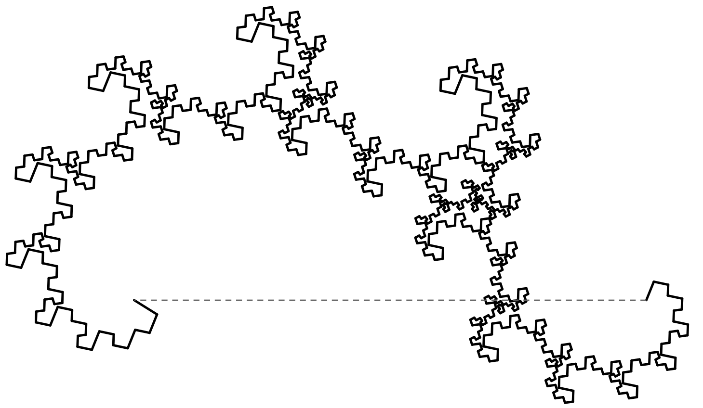

Linear Algebra & Applications
2201NSC
Week 10 - Singular Value Decomposition

Problem 1
Use the SVD to give a basis and dimension for the column, row, and null spaces of:
| (a) $\,A = \begin{pmatrix} 1 & 3 & 2 \\ 2 & 1 & 4 \\ 4 & 7 & 8 \end{pmatrix}.$ | (b) $\,A = \begin{pmatrix} 1 & 0 & 2 & 1 \\ 0 & 1 & 1 & 4 \\ 0 & 2 & -1 & -1 \end{pmatrix}.$ |
Problem 1 (cont.)
(a) $\,A = \begin{pmatrix} 1 & 3 & 2 \\ 2 & 1 & 4 \\ 4 & 7 & 8 \end{pmatrix}.$
Problem 2
Download the Octave code $\texttt{magic_approx_SVD.m}$ from Learning@Griffith.
- Calculate the rank 1, 2, and 3 approximations to the $10\times 10$ magic matrix, $A$.
- For each of the approximations, calculate the level of compression achieved (assume that the elements of the magic square are independent, otherwise we're going to have trouble).
- Prove, by hand, that there is no $2\times 2$ magic square.
Problem 2 (cont.)
# OCTAVE CODE. Run it here: https://octave-online.net/
pkg load linear-algebra % Load the linear algebra package
A = magic(10); % Generate a 10x10 magic square matrix
r = 1; % Set the rank for the approximation
% Compute the rank-r SVD approximation
[u, s, v] = svds(A, r); % Compute the truncated SVD
A_approx = u * s * v'; % Reconstruct the rank-r
% Find the largest & smallest elements across both A and A_approx
amax = max(max(max(A)), max(max(A_approx)));
amin = min(min(min(A)), min(min(A_approx)));
% Rescale matrices to the range [0, 63] for grayscale image display
A_color = (A - amin) / (amax - amin) * 63;
A_approx_color = (A_approx - amin) / (amax - amin) * 63;
Problem 2 (cont.)
% Display the original matrix as a grayscale image
figure(1);
colormap(bone); % Set the colormap to 'bone'
image(A_color); % Display the rescaled matrix as an image
title('Original A'); % Add a title
% Display the rank-r approximation as a grayscale image
figure(2);
colormap(bone);
image(A_approx_color);
title('Rank-1 Approximation');
Run Octave online here: octave-online.net
pkg load linear-algebra % Load the linear algebra package
A = magic(10); % Generate a 10x10 magic square matrix
r = 1; % Set the rank for the approximation
% Compute the rank-r SVD approximation
[u, s, v] = svds(A, r); % Compute the truncated SVD
A_approx = u * s * v'; % Reconstruct the rank-r
% Find the largest & smallest elements across both A and A_approx
amax = max(max(max(A)), max(max(A_approx)));
amin = min(min(min(A)), min(min(A_approx)));
% Rescale matrices to the range [0, 63] for grayscale image display
A_color = (A - amin) / (amax - amin) * 63;
A_approx_color = (A_approx - amin) / (amax - amin) * 63;
% Display the original matrix as a grayscale image
figure(1);
colormap(bone); % Set the colormap to 'bone'
image(A_color); % Display the rescaled matrix as an image
title('Original A'); % Add a title
% Display the rank-r approximation as a grayscale image
figure(2);
colormap(bone);
image(A_approx_color);
title('Rank-1 Approximation');
Problem 3
Download the Octave code from $\texttt{SVD_image_compress.m}$ from Learning@Griffith.
- Calculate the rank $10$, $50$, and $100$ approximations to the image $\texttt{Lambs.jpg}.$
- For each of the approximations, calculate the level of compression achieved.
- Try compressing $\texttt{ote_screenshot.png}.$ What sort of artefacts do you encounter?
Problem 3 (cont.)
# PYTHON CODE. Run it here: https://trinket.io/python3
import numpy as np
import matplotlib.pyplot as plt
from scipy.sparse.linalg import svds
from PIL import Image
import requests
from io import BytesIO
# Rank for approximation
r = 50
# Download the image from URL
url = "https://esc-maths.github.io/assets/imgs/Lambs.jpg"
response = requests.get(url)
a = np.array(Image.open(BytesIO(response.content))) # numpy array
# Extract color channels as float
R = a[:, :, 0].astype(float)
G = a[:, :, 1].astype(float)
B = a[:, :, 2].astype(float)
Problem 3 (cont.)
# Function for rank-r SVD approximation
def svd_approx(X, r):
U, S, Vt = svds(X, k=r)
# svds returns singular values in ascending order, so reverse
S = np.diag(S[::-1])
U = U[:, ::-1]
Vt = Vt[::-1, :]
return np.dot(U, np.dot(S, Vt))
# Apply to each channel
R_approx = svd_approx(R, r)
G_approx = svd_approx(G, r)
B_approx = svd_approx(B, r)
# Reconstruct image
a_out = np.stack([R_approx, G_approx, B_approx], axis=2)
a_out = np.clip(a_out, 0, 255).astype(np.uint8)
Problem 3 (cont.)
# Plot side by side (like montage in Octave)
fig, axes = plt.subplots(1, 2, figsize=(15, 10))
axes[0].imshow(a)
axes[0].set_title("Original")
axes[0].axis("off")
axes[1].imshow(a_out)
axes[1].set_title(f"Rank-{r} Approximation")
axes[1].axis("off")
plt.show()
Run Python online here: trinket.io/python3
import numpy as np
import matplotlib.pyplot as plt
from scipy.sparse.linalg import svds
from PIL import Image
import requests
from io import BytesIO
# Rank for approximation
r = 50
# Download the image from URL
url = "https://esc-maths.github.io/assets/imgs/Lambs.jpg"
response = requests.get(url)
a = np.array(Image.open(BytesIO(response.content))) # numpy array
# Extract color channels as float
R = a[:, :, 0].astype(float)
G = a[:, :, 1].astype(float)
B = a[:, :, 2].astype(float)
# Function for rank-r SVD approximation
def svd_approx(X, r):
U, S, Vt = svds(X, k=r)
# svds returns singular values in ascending order, so reverse
S = np.diag(S[::-1])
U = U[:, ::-1]
Vt = Vt[::-1, :]
return np.dot(U, np.dot(S, Vt))
# Apply to each channel
R_approx = svd_approx(R, r)
G_approx = svd_approx(G, r)
B_approx = svd_approx(B, r)
# Reconstruct image
a_out = np.stack([R_approx, G_approx, B_approx], axis=2)
a_out = np.clip(a_out, 0, 255).astype(np.uint8)
# Plot side by side (like montage in Octave)
fig, axes = plt.subplots(1, 2, figsize=(15, 10))
axes[0].imshow(a)
axes[0].set_title("Original")
axes[0].axis("off")
axes[1].imshow(a_out)
axes[1].set_title(f"Rank-{r} Approximation")
axes[1].axis("off")
plt.show()